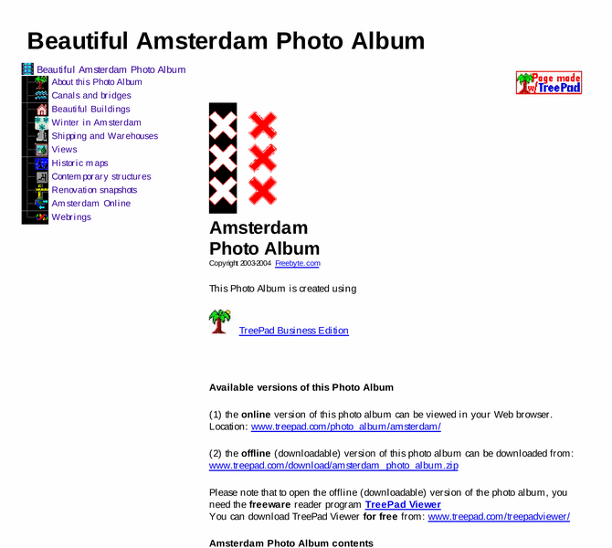

Previewing: Beautiful Amsterdam Photo Album Previewing: Beautiful Amsterdam Photo Album 
Use the left/right red arrow controls to navigate through this ring - Click the preview image to visit the member site.

Lovely sceneries and splendid views of Amsterdam: gorgeous canals and bridges, elegant buildings, shipping and warehouses, historic maps and more. View online in your Web browser or download and share it for free.
Beautiful Amsterdam Photo Album owned by:
 freebyte freebyte
A member of the original webring since 10/21/2011.
|
|